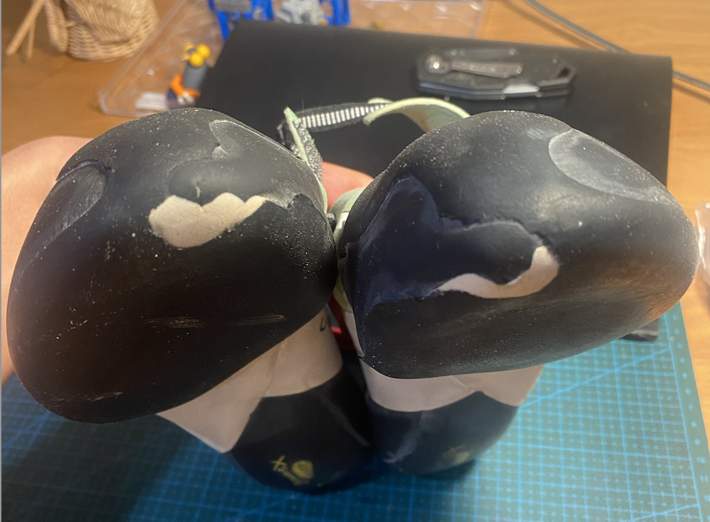
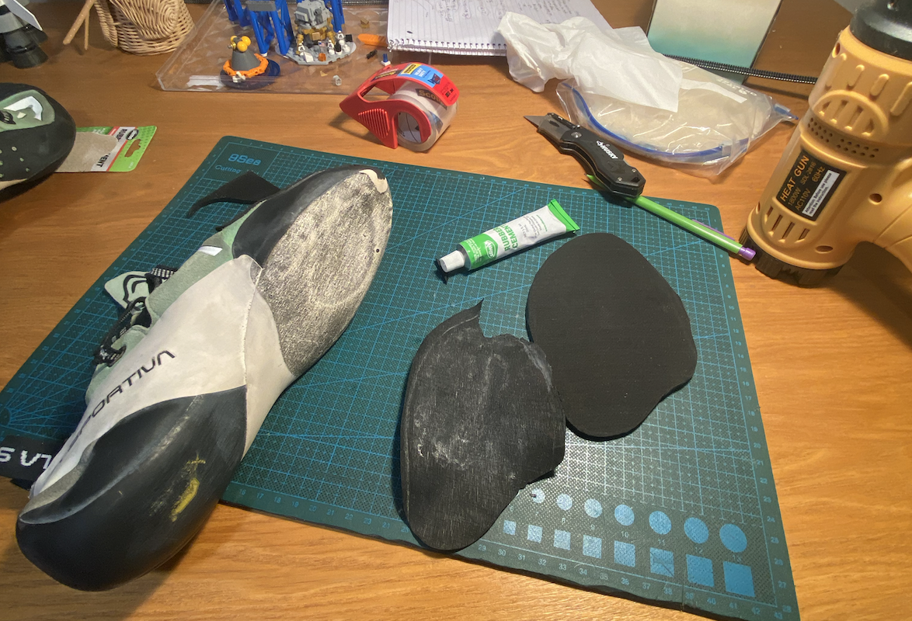
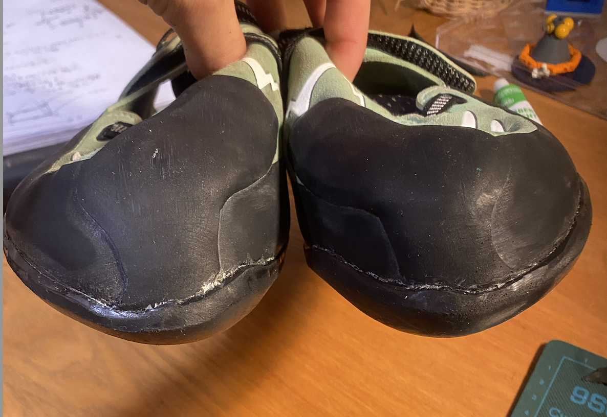

Climbing Shoe Resole
A pair of worn climbing shoes, a workbench, and a second set of soles.
Before
Where the rubber gave out
These are my La Sportiva Futuras. After six to seven months of climbing, the rubber at both toes had worn through, exposing the leather underneath. The damage was concentrated at the front, so that’s where I started the repair.

During
Old rubber, new outline
I used a heat gun to soften the old glue and peel off the worn sole. On the cutting mat, I used the old sole as a template to trace and cut a replacement from a sheet of Vibram XS Grip 2 rubber.
I used heat and contact cement to bond the new rubber to the shoe.

After
Back in one piece
The last photo brings the shoes back to the same toe-up view. The exposed leather is covered, and the seam shows where the replacement rubber meets the original shoe. I kept the rand, the rubber that wraps around the toe, thick to give it more material to wear through over time.
